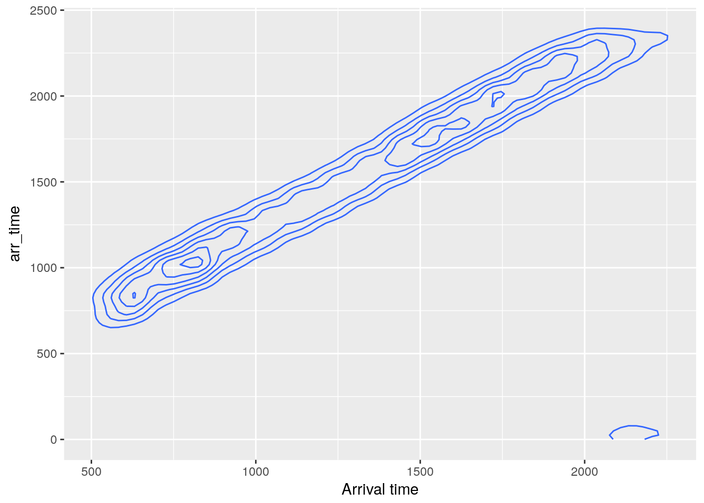
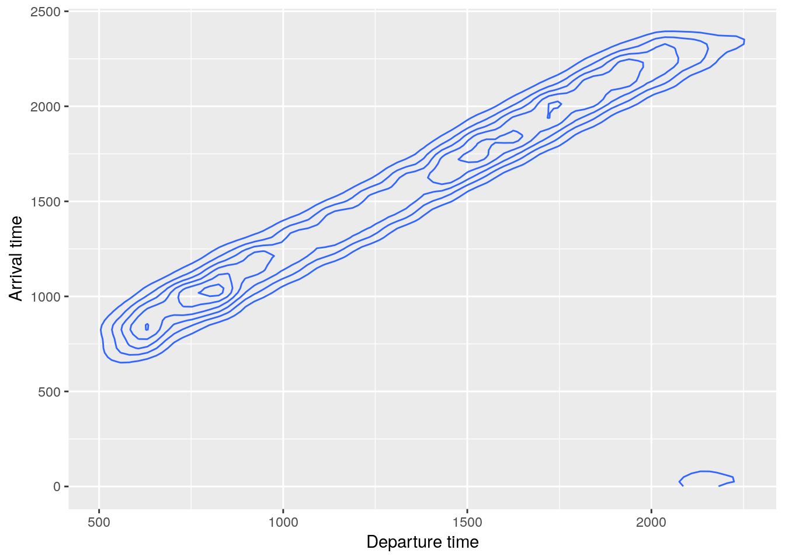
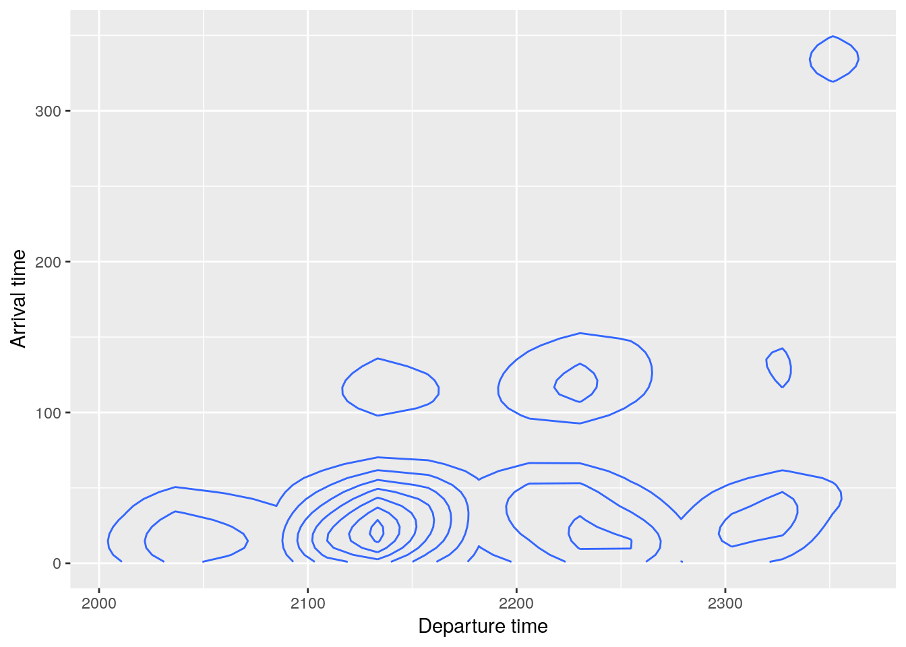
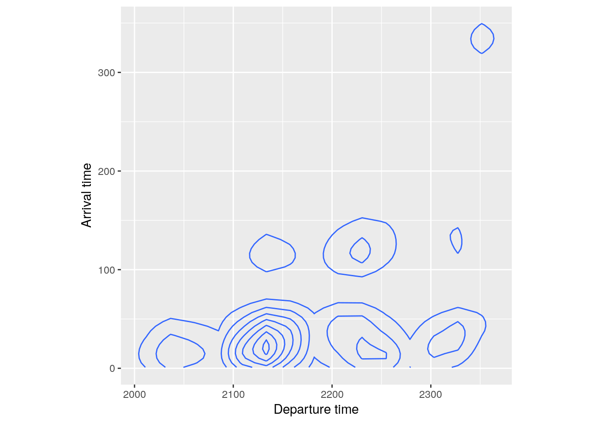

flights %>%
select(year, month, day, dep_time, sched_dep_time)## # A tibble: 336,776 x 5
## year month day dep_time sched_dep_time
## <int> <int> <int> <int> <int>
## 1 2013 1 1 517 515
## 2 2013 1 1 533 529
## 3 2013 1 1 542 540
## 4 2013 1 1 544 545
## 5 2013 1 1 554 600
## 6 2013 1 1 554 558
## 7 2013 1 1 555 600
## 8 2013 1 1 557 600
## 9 2013 1 1 557 600
## 10 2013 1 1 558 600
## # ... with 336,766 more rowsflights %>%
select(year:sched_dep_time)## # A tibble: 336,776 x 5
## year month day dep_time sched_dep_time
## <int> <int> <int> <int> <int>
## 1 2013 1 1 517 515
## 2 2013 1 1 533 529
## 3 2013 1 1 542 540
## 4 2013 1 1 544 545
## 5 2013 1 1 554 600
## 6 2013 1 1 554 558
## 7 2013 1 1 555 600
## 8 2013 1 1 557 600
## 9 2013 1 1 557 600
## 10 2013 1 1 558 600
## # ... with 336,766 more rows## Numeric indexes work, too
flights %>%
select(1:5)## # A tibble: 336,776 x 5
## year month day dep_time sched_dep_time
## <int> <int> <int> <int> <int>
## 1 2013 1 1 517 515
## 2 2013 1 1 533 529
## 3 2013 1 1 542 540
## 4 2013 1 1 544 545
## 5 2013 1 1 554 600
## 6 2013 1 1 554 558
## 7 2013 1 1 555 600
## 8 2013 1 1 557 600
## 9 2013 1 1 557 600
## 10 2013 1 1 558 600
## # ... with 336,766 more rowsflights %>%
select(-year, -month, -day)## # A tibble: 336,776 x 16
## dep_t… sched_… dep_d… arr_… sched… arr_d… carr… flig… tail… orig… dest
## <int> <int> <dbl> <int> <int> <dbl> <chr> <int> <chr> <chr> <chr>
## 1 517 515 2.00 830 819 11.0 UA 1545 N142… EWR IAH
## 2 533 529 4.00 850 830 20.0 UA 1714 N242… LGA IAH
## 3 542 540 2.00 923 850 33.0 AA 1141 N619… JFK MIA
## 4 544 545 -1.00 1004 1022 -18.0 B6 725 N804… JFK BQN
## 5 554 600 -6.00 812 837 -25.0 DL 461 N668… LGA ATL
## 6 554 558 -4.00 740 728 12.0 UA 1696 N394… EWR ORD
## 7 555 600 -5.00 913 854 19.0 B6 507 N516… EWR FLL
## 8 557 600 -3.00 709 723 -14.0 EV 5708 N829… LGA IAD
## 9 557 600 -3.00 838 846 - 8.00 B6 79 N593… JFK MCO
## 10 558 600 -2.00 753 745 8.00 AA 301 N3AL… LGA ORD
## # ... with 336,766 more rows, and 5 more variables: air_time <dbl>,
## # distance <dbl>, hour <dbl>, minute <dbl>, time_hour <dttm>flights %>%
select(-year:-day)## # A tibble: 336,776 x 16
## dep_t… sched_… dep_d… arr_… sched… arr_d… carr… flig… tail… orig… dest
## <int> <int> <dbl> <int> <int> <dbl> <chr> <int> <chr> <chr> <chr>
## 1 517 515 2.00 830 819 11.0 UA 1545 N142… EWR IAH
## 2 533 529 4.00 850 830 20.0 UA 1714 N242… LGA IAH
## 3 542 540 2.00 923 850 33.0 AA 1141 N619… JFK MIA
## 4 544 545 -1.00 1004 1022 -18.0 B6 725 N804… JFK BQN
## 5 554 600 -6.00 812 837 -25.0 DL 461 N668… LGA ATL
## 6 554 558 -4.00 740 728 12.0 UA 1696 N394… EWR ORD
## 7 555 600 -5.00 913 854 19.0 B6 507 N516… EWR FLL
## 8 557 600 -3.00 709 723 -14.0 EV 5708 N829… LGA IAD
## 9 557 600 -3.00 838 846 - 8.00 B6 79 N593… JFK MCO
## 10 558 600 -2.00 753 745 8.00 AA 301 N3AL… LGA ORD
## # ... with 336,766 more rows, and 5 more variables: air_time <dbl>,
## # distance <dbl>, hour <dbl>, minute <dbl>, time_hour <dttm>## Numeric indexes work, too
flights %>%
select(-1:-3)## # A tibble: 336,776 x 16
## dep_t… sched_… dep_d… arr_… sched… arr_d… carr… flig… tail… orig… dest
## <int> <int> <dbl> <int> <int> <dbl> <chr> <int> <chr> <chr> <chr>
## 1 517 515 2.00 830 819 11.0 UA 1545 N142… EWR IAH
## 2 533 529 4.00 850 830 20.0 UA 1714 N242… LGA IAH
## 3 542 540 2.00 923 850 33.0 AA 1141 N619… JFK MIA
## 4 544 545 -1.00 1004 1022 -18.0 B6 725 N804… JFK BQN
## 5 554 600 -6.00 812 837 -25.0 DL 461 N668… LGA ATL
## 6 554 558 -4.00 740 728 12.0 UA 1696 N394… EWR ORD
## 7 555 600 -5.00 913 854 19.0 B6 507 N516… EWR FLL
## 8 557 600 -3.00 709 723 -14.0 EV 5708 N829… LGA IAD
## 9 557 600 -3.00 838 846 - 8.00 B6 79 N593… JFK MCO
## 10 558 600 -2.00 753 745 8.00 AA 301 N3AL… LGA ORD
## # ... with 336,766 more rows, and 5 more variables: air_time <dbl>,
## # distance <dbl>, hour <dbl>, minute <dbl>, time_hour <dttm>## contains()
flights %>%
select(contains("dep_"))## # A tibble: 336,776 x 3
## dep_time sched_dep_time dep_delay
## <int> <int> <dbl>
## 1 517 515 2.00
## 2 533 529 4.00
## 3 542 540 2.00
## 4 544 545 -1.00
## 5 554 600 -6.00
## 6 554 558 -4.00
## 7 555 600 -5.00
## 8 557 600 -3.00
## 9 557 600 -3.00
## 10 558 600 -2.00
## # ... with 336,766 more rows## everything()
flights %>%
select(-contains("dep_"), everything())## # A tibble: 336,776 x 19
## year month day arr_t… sched_a… arr_de… carr… flig… tail… orig… dest
## <int> <int> <int> <int> <int> <dbl> <chr> <int> <chr> <chr> <chr>
## 1 2013 1 1 830 819 11.0 UA 1545 N142… EWR IAH
## 2 2013 1 1 850 830 20.0 UA 1714 N242… LGA IAH
## 3 2013 1 1 923 850 33.0 AA 1141 N619… JFK MIA
## 4 2013 1 1 1004 1022 -18.0 B6 725 N804… JFK BQN
## 5 2013 1 1 812 837 -25.0 DL 461 N668… LGA ATL
## 6 2013 1 1 740 728 12.0 UA 1696 N394… EWR ORD
## 7 2013 1 1 913 854 19.0 B6 507 N516… EWR FLL
## 8 2013 1 1 709 723 -14.0 EV 5708 N829… LGA IAD
## 9 2013 1 1 838 846 - 8.00 B6 79 N593… JFK MCO
## 10 2013 1 1 753 745 8.00 AA 301 N3AL… LGA ORD
## # ... with 336,766 more rows, and 8 more variables: air_time <dbl>,
## # distance <dbl>, hour <dbl>, minute <dbl>, time_hour <dttm>,
## # dep_time <int>, sched_dep_time <int>, dep_delay <dbl>## Overriding label names
flights %>%
ggplot() +
geom_density2d(aes(dep_time, arr_time)) +
scale_x_continuous(name = "Departure time") +
scale_x_continuous(name = "Arrival time")## Scale for 'x' is already present. Adding another scale for 'x', which
## will replace the existing scale.## Warning: Removed 8713 rows containing non-finite values (stat_density2d).
## Renaming in the data
flights %>%
rename(`Departure time` = dep_time) %>%
rename(`Arrival time` = arr_time) %>%
ggplot() +
geom_density2d(aes(`Departure time`, `Arrival time`))## Warning: Removed 8713 rows containing non-finite values (stat_density2d).
flights %>%
filter(arr_time < 500) %>%
rename(`Departure time` = dep_time) %>%
rename(`Arrival time` = arr_time) %>%
ggplot() +
geom_density2d(aes(`Departure time`, `Arrival time`))
## Use coord_fixed() for fixing axes
flights %>%
filter(arr_time < 500) %>%
rename(`Departure time` = dep_time) %>%
rename(`Arrival time` = arr_time) %>%
ggplot() +
geom_density2d(aes(`Departure time`, `Arrival time`)) +
coord_fixed()
Copyright © 2017 Kirill Müller. Licensed under CC BY-NC 4.0.